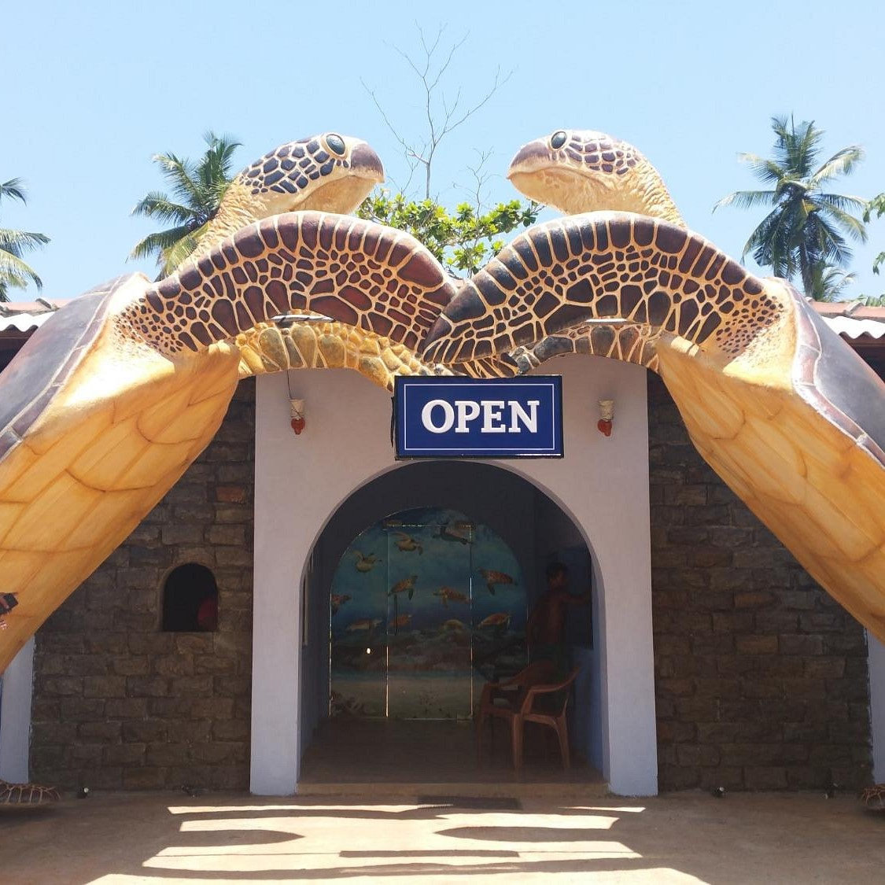

The Sea Turtle Hatchery is a turtle conservation facility situated along the Indian Ocean shore in Kosgoda, 9 kilometers from Bentota Railway Station. During your trip to Sri Lanka, it is one of the things you really must see in Bentota.
Dudley Perera initiated the Kosgoda Sea Turtle Conservation Project in 1981. The project's primary goal is to preserve sea turtles and safeguard them against raptors like birds, dogs, and crabs. It is one of the 18 hatcheries in Sri Lanka specialized to raising this threatened species properly. Out of the seven species of margin turtle found worldwide, visitors may view up to five endangered kinds in one location. The location is ideal for children, but it offers everyone a once-in-a-lifetime experience.
|  | WHAT HAPPENS AT THE TURTLE HATCHERYTo ensure that any mother turtles have suitable circumstances to lay eggs, the volunteers monitor the beach at night. They also transport the eggs back to the hatchery to ensure proper hatching without predator injury, and once fully hatched, they release the young sea turtles back into the ocean. They also care for disabled sea turtles and cure those that have grown frail because of fishing activity. |
WHAT TO EXPECTWhen visiting the hatchery, visitors will receive instructions on how to preserve the sea turtles and ensure that they are properly hatched. When the young turtles are released into the ocean in the evening, visitors can also go to the hatchery since there is less of a risk from predators and they can participate in the release of a newborn sea turtle. |